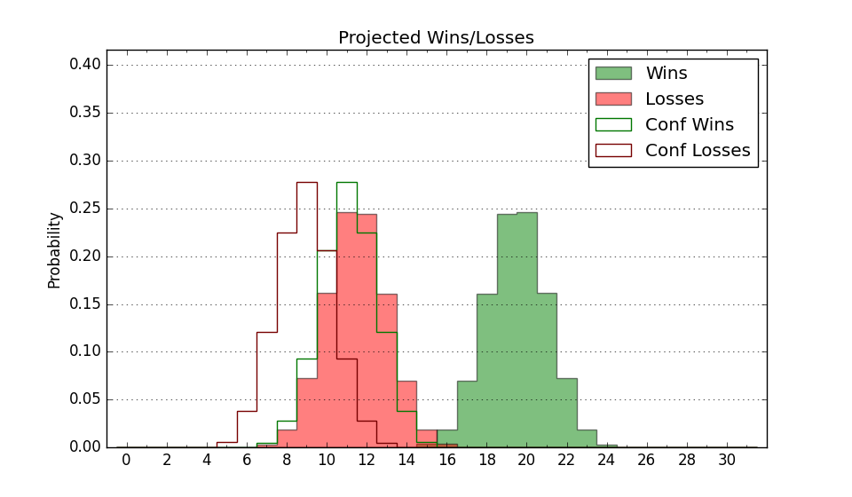

| Home | Game Probabilities | Conferences | Preseason Predictions | Odds Charts | NCAA Tournament |
| City: | Columbus, Ohio | |
| Conference: | Big Ten (8th)
| |
| Record: | 6-4 (Conf) 14-6 (Overall) | |
| Ratings: | Comp.: 22.6 (34th) Net: 22.3 (36th) Off: 124.8 (20th) Def: 102.5 (76th) SoR: 43.3 (44th) |
| Remaining | ||||||
|---|---|---|---|---|---|---|
| Date | Opponent | Win Prob | Pred. | |||
| 1/31 | @ Wisconsin (43) | 44.0% | L 81-82 | |||
| 2/5 | @ Maryland (145) | 80.6% | W 82-72 | |||
| 2/8 | Michigan (1) | 21.2% | L 78-88 | |||
| 2/11 | USC (50) | 76.7% | W 84-76 | |||
| 2/14 | (N) Virginia (22) | 39.3% | L 77-80 | |||
| 2/17 | Wisconsin (43) | 72.8% | W 85-78 | |||
| 2/22 | @ Michigan St. (12) | 18.9% | L 68-78 | |||
| 2/25 | @ Iowa (23) | 26.4% | L 71-77 | |||
| 3/1 | Purdue (7) | 35.5% | L 76-80 | |||
| 3/4 | @ Penn St. (124) | 75.8% | W 84-76 | |||
| 3/7 | Indiana (29) | 59.4% | W 79-77 | |||
| Previous | Game Score | |||||
| Date | Opponent | Win Prob | Result | Off | Def | Net |
| 11/3 | IUPUI (313) | 98.8% | W 118-102 | 3.7 | -23.7 | -20.0 |
| 11/7 | Fort Wayne (228) | 97.1% | W 94-68 | -2.1 | 2.2 | 0.0 |
| 11/11 | Appalachian St. (196) | 95.8% | W 75-53 | -3.5 | 6.9 | 3.4 |
| 11/16 | Notre Dame (78) | 84.6% | W 64-63 | -26.4 | 10.2 | -16.2 |
| 11/20 | Western Michigan (281) | 98.2% | W 91-58 | -6.5 | 17.1 | 10.6 |
| 11/25 | Mount St. Mary's (310) | 98.8% | W 113-60 | 22.2 | 4.1 | 26.3 |
| 11/28 | @Pittsburgh (106) | 71.1% | L 66-67 | -17.3 | 7.4 | -10.0 |
| 12/6 | @Northwestern (51) | 49.2% | W 86-82 | 4.1 | -1.2 | 2.8 |
| 12/9 | Illinois (6) | 35.4% | L 80-88 | -0.8 | -6.8 | -7.6 |
| 12/13 | (N) West Virginia (63) | 70.1% | W 89-88 | -6.4 | -1.8 | -8.2 |
| 12/20 | (N) North Carolina (28) | 43.1% | L 70-71 | -5.2 | 5.3 | 0.1 |
| 12/23 | Grambling St. (277) | 98.1% | W 89-63 | 4.3 | -4.6 | -0.3 |
| 1/2 | @Rutgers (152) | 81.9% | W 80-73 | 9.7 | -12.8 | -3.1 |
| 1/5 | Nebraska (10) | 42.5% | L 69-72 | -7.0 | 8.3 | 1.3 |
| 1/8 | @Oregon (97) | 68.6% | W 72-62 | -2.1 | 9.8 | 7.7 |
| 1/11 | @Washington (46) | 46.0% | L 74-81 | 4.4 | -12.7 | -8.3 |
| 1/17 | UCLA (39) | 69.2% | W 86-74 | 20.7 | -10.8 | 9.9 |
| 1/20 | Minnesota (73) | 83.3% | W 82-74 | -1.2 | -5.0 | -6.2 |
| 1/23 | @Michigan (1) | 7.3% | L 62-74 | -3.5 | 12.3 | 8.8 |
| 1/26 | Penn St. (124) | 91.4% | W 84-78 | -4.8 | -8.6 | -13.3 |
| Stats & Trends | |||||
|---|---|---|---|---|---|
| Current | Day | Week | Month | Season | |
| Composite | 22.6 | +0.1 | -0.7 | -0.2 | -4.9 |
| Comp Rank | 34 | +2 | -- | -1 | -26 |
| Net Efficiency | 22.3 | +0.1 | -0.7 | +0.9 | -- |
| Net Rank | 36 | -- | -2 | +1 | -- |
| Off Efficiency | 124.8 | +0.1 | -0.2 | +1.7 | -- |
| Off Rank | 20 | +1 | -2 | +4 | -- |
| Def Efficiency | 102.5 | -0.0 | -0.5 | -0.8 | -- |
| Def Rank | 76 | -- | -5 | +2 | -- |
| SoS Rank | 46 | +1 | -20 | +121 | -- |
| Exp. Wins | 19.5 | +0.0 | +0.0 | -0.3 | -4.7 |
| Exp. Conf Wins | 11.1 | +0.0 | -0.0 | -0.2 | -2.5 |
| Conf Champ Prob | 0.0 | -0.0 | -0.0 | -0.6 | -22.6 |

| Advanced Stats | ||
|---|---|---|
| Stat | Value | Rank |
| Off Eff FG % | 0.590 | 16 |
| Off Ast Ratio | 0.167 | 66 |
| Off ORB% | 0.351 | 59 |
| Off TO Rate | 0.136 | 101 |
| Off FT Ratio | 0.434 | 29 |
| Def Eff FG % | 0.465 | 41 |
| Def Ast Ratio | 0.130 | 62 |
| Def ORB% | 0.286 | 106 |
| Def TO Rate | 0.149 | 173 |
| Def FT Ratio | 0.326 | 111 |